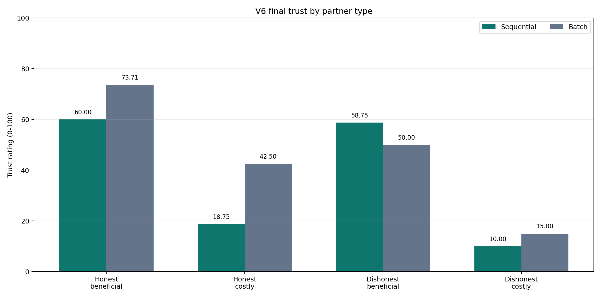
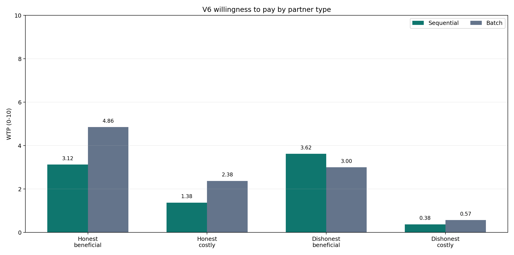
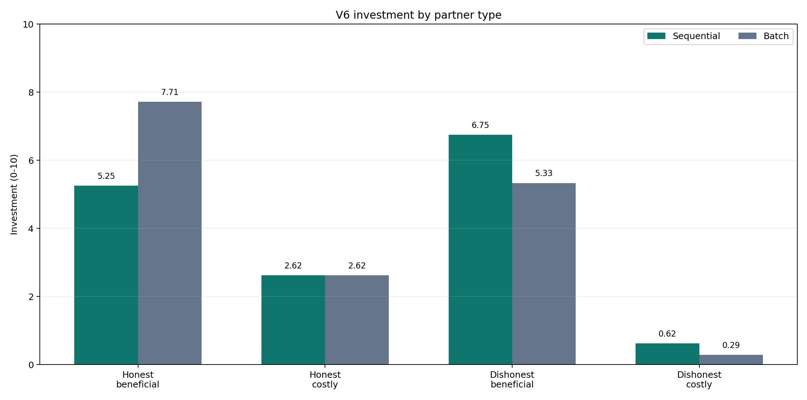
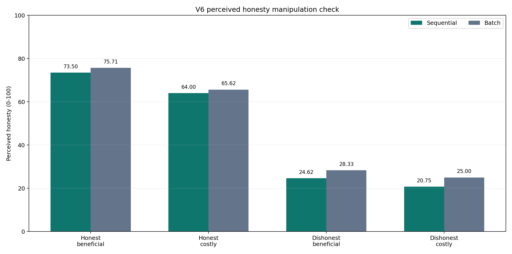
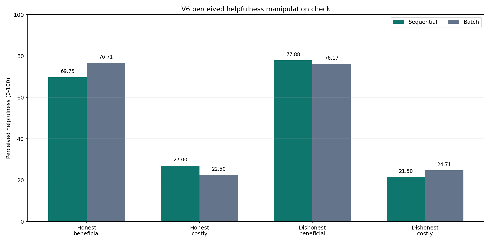

同一个 partner 先在信息建议任务中建立 honesty/helpfulness 声誉，再进入 trust/WTP 决策。核心看 social trust 和 willingness to pay 是否可分离。





| Partner | Mode | N | Honesty | Rec win | Trust | WTP | Investment | Perceived honesty | Perceived helpfulness | Actual win |
|---|---|---|---|---|---|---|---|---|---|---|
| honest_beneficial | sequential | 8/8 | 0.75 | 0.75 | 60 | 3.125 | 5.25 | 73.5 | 69.75 | 0.639 |
| honest_beneficial | batch | 7/8 | 0.75 | 0.75 | 73.714 | 4.857 | 7.714 | 75.714 | 76.714 | |
| honest_costly | sequential | 8/8 | 0.75 | 0.25 | 18.75 | 1.375 | 2.625 | 64 | 27 | 0.729 |
| honest_costly | batch | 8/8 | 0.75 | 0.25 | 42.5 | 2.375 | 2.625 | 65.625 | 22.5 | |
| dishonest_beneficial | sequential | 8/8 | 0.25 | 0.75 | 58.75 | 3.625 | 6.75 | 24.625 | 77.875 | 0.541 |
| dishonest_beneficial | batch | 6/8 | 0.25 | 0.75 | 50 | 3 | 5.333 | 28.333 | 76.167 | |
| dishonest_costly | sequential | 8/8 | 0.25 | 0.25 | 10 | 0.375 | 0.625 | 20.75 | 21.5 | 0.667 |
| dishonest_costly | batch | 7/8 | 0.25 | 0.25 | 15 | 0.571 | 0.286 | 25 | 24.714 |